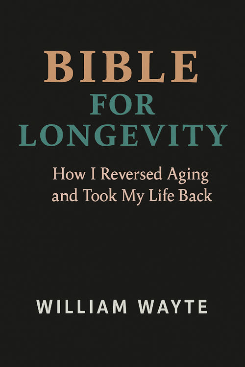

THE BOOK
Bible for Longevity
Discover the personal journey behind William’s transformation, available through Amazon.
VIEW BOOK ON AMAZON ↗Wellness is personal. Explore the habits, mindset, and everyday choices that can help you take a more active role in your health.

My journey began with a decision to take a closer look at my health and the way I was living. After losing more than 140 pounds, I became passionate about sharing my experiences and what I’ve learned along the way.
Today, I bring together personal experience, practical habits, and a curiosity about longevity to help others explore what a healthier, more vibrant life can look like for them.
Author of Bible for Longevity · Speaker · Wellness advocate
Discover the personal journey behind William’s transformation, available through Amazon.
VIEW BOOK ON AMAZON ↗Real-life experience meets AI insight in conversations about wellness and longevity.
EXPLORE EPISODES ↗Start where you are. Explore what matters to you.
Give rest and daily rhythms the attention they deserve.
Explore movement, nutrition, and routines that fit your life.
Take meaningful steps and keep showing up for yourself.
The habits and ideas I explore in my own life—and why they matter to me.
I make sleep and recovery a priority because how I rest affects how I feel and function the next day. A consistent routine, a quiet environment, and allowing enough time to sleep are practical places to begin.
Most adults need at least seven hours of sleep. If sleep problems persist, a healthcare professional can help identify what’s getting in the way.
Read the CDC sleep guidance ↗My workouts are short and intense—usually 12 to 15 minutes at most. I use relatively light dumbbells for movements like curls, overhead exercises, and fly movements, alongside push-ups, sit-ups, and crunches. I keep moving and give it a strong effort. I like to picture the kind of burst our ancestors might have needed to escape a saber-toothed tiger: quick, focused, and demanding. It’s an image that motivates me, not a claim that everyone needs to train that way.
People respond differently to intense exercise. Start at a level that fits your health and build gradually; if you have heart disease or another chronic condition, talk with your healthcare professional about what intensity is appropriate.
Explore CDC activity guidance ↗Sauna is part of my personal routine and gives me time to slow down. During a sauna session, heat raises heart rate and activates the body’s stress response. In one small study, participants showed signs of increased parasympathetic activity during the cool-down afterward.
Researchers are also studying whether heat affects autophagy, the body’s cellular recycling process. There is not yet a proven sauna temperature or duration that reliably produces this effect in people.
Heat isn’t right for everyone. Stay hydrated and, especially if you have a heart condition or take blood-pressure medication, check with your clinician before using a sauna.
Read the sauna and recovery study ↗I’m interested in NAD+ and supplements as part of the wider conversation about aging. NAD+ plays a role in energy metabolism, and researchers continue to study how its levels relate to aging.
Research is still developing; it has not established that NAD+ supplements or injections reverse aging in people. Products and individual needs vary, so review supplements and interactions with your clinician.
Explore NAD+ research at the Sinclair Lab ↗In this interview, Sinclair discusses aging research, exercise, fasting, and supplements. It reflects his views and experiences and is not a personal medical recommendation.
Grip strength: Strong hands help with everyday tasks like carrying groceries, opening jars, and holding on securely. Grip is one part of overall strength.
Balance: Staying steady can help you move with confidence and reduce the risk of falls. Practice appropriate to your ability, with support when needed.
Cognitive health: Keep your mind engaged through learning, connection, and attention to sleep and overall health.
Flexibility: Comfortable stretching and mobility work can help you maintain the range of motion needed for everyday activities.
These are four priorities in my approach. They work alongside aerobic activity, strength training, recovery, and healthcare suited to the individual.
Explore activity guidance for healthy aging ↗Think of a cell as a busy community. Its DNA is the instruction library, epigenetic signals help determine which instructions are used, and mitochondria help turn nutrients into usable energy. These systems interact; they do not age independently.
Telomeres are protective caps at chromosome ends that can shorten as cells divide. Mitochondria help supply cellular energy and can become less effective with age. Sirtuins are a family of proteins that use NAD+ and help regulate processes involved in stress responses, metabolism and gene activity. Researchers are still working out how best to influence these pathways in people.
Explore the hallmarks of aging ↗One idea that excites me is that aging may involve changes in the cell’s epigenetic information—chemical signals that help control which genes are active. Imagine an instruction manual whose notes become harder to interpret over time. Scientists are investigating whether some of those signals can be reset.
Shinya Yamanaka and colleagues originally identified four reprogramming factors: Oct4, Sox2, Klf4 and c-Myc. David Sinclair’s research team studied three of them—Oct4, Sox2 and Klf4 (OSK)—to explore partial reprogramming without fully returning cells to a stem-cell state.
In a 2020 study, the team reported more youthful gene-regulation patterns, optic nerve regeneration and improved vision in certain mouse models. That is exciting laboratory research, but it is not proof that human aging can currently be reversed or that OSK is a safe treatment for people.
Read Sinclair’s team’s vision and reprogramming study ↗Inflammation is one way the immune system protects us and helps us heal. But when inflammation is excessive or remains active for a long time, it can contribute to tissue damage and chronic disease. It is one of several processes researchers study in aging.
Severe COVID-19 illustrates how complicated this can be: the virus can cause injury, while inflammation, lung damage and blood clots can also contribute to severe illness. Supporting health and treating illness involves more than eliminating inflammation—it means helping the body respond appropriately.
Read a study of inflammation in severe COVID-19 ↗I believe aging deserves serious attention as a driver of disease and declining function. Researchers are studying whether treating underlying aging processes could extend the years we live in good health. Whether aging itself should be classified as a disease is debated; no treatment has yet been proven to reverse the whole aging process in humans.
That is why I share my interest in movement, sleep, nutrition and emerging research. These are ways to explore health and resilience—not guarantees that a supplement or routine will reset cells.
Explore the science of aging ↗These are educational topics and personal experiences, not a treatment plan or a recommendation to copy a specific protocol. My exact routine can change over time.
Looking for structure, encouragement, and a fresh perspective on your wellness journey? Connect with William to ask about personal wellness guidance and learn what support may be available.
ASK ABOUT WELLNESS GUIDANCE ↗Explore episodes on sleep, morning routines, and stress.
William and Nancy talk about the role of rest and recovery.
WATCH EPISODE ↗A conversation about creating a more intentional start to the day.
WATCH EPISODE ↗Explore how stress and recovery influence how we feel.
WATCH EPISODE ↗Have a question about William’s wellness approach, routines, or book? Send a message to get in touch.